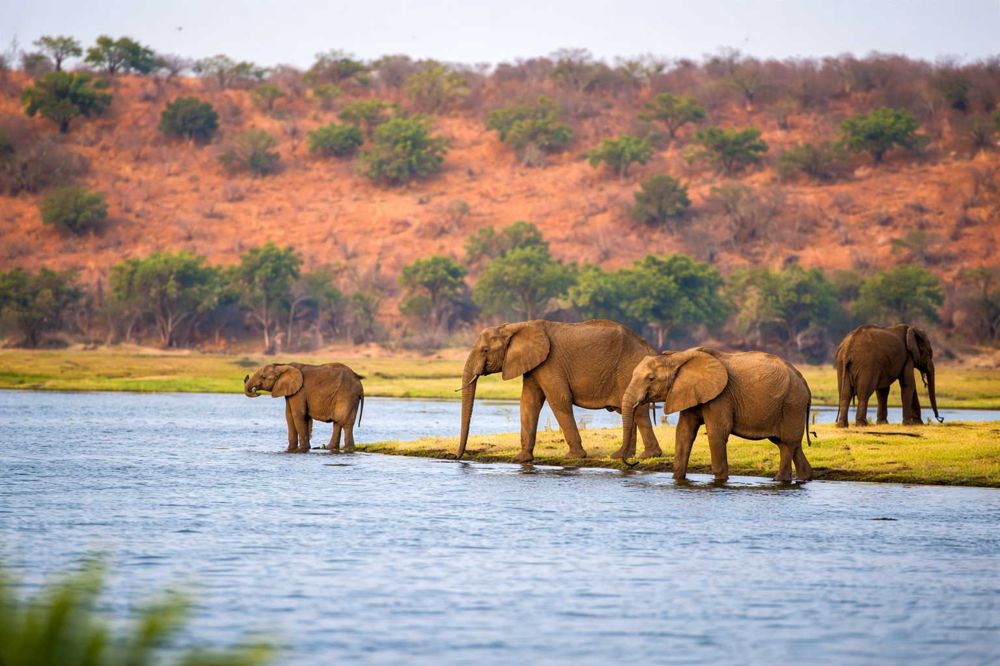

Okavango
24.5k
Delta de l'Okavango
Patrimoine Mondial de l'UNESCO

RetourLe dernier sanctuaire sauvage et l'éclat des diamants
Le Botswana est une réussite africaine unique. Pays de contrastes saisissants, il abrite à la fois le Delta de l'Okavango, une oasis labyrinthique au cœur du désert, et les vastes étendues arides du Kalahari. Pionnier du tourisme éco-responsable de haut vol, le Botswana offre des safaris d'une exclusivité rare, où l'homme n'est qu'un invité discret dans le royaume des éléphants et des fauves.
Patrimoine Mondial de l'UNESCO

Le royaume des 120 000 éléphants

Terre des Bushmen et des lions à crinière noire

L'un des plus grands déserts de sel au monde

Le "Louvre du Désert" et ses peintures rupestres

Le cœur sauvage du delta

Les baobabs de Baines et les migrations de zèbres

Théâtre de la lutte pour la survie entre lions et éléphants

La capitale dynamique et moderne

Une île de baobabs au milieu d'une mer de sel

L'un des plus grands parcs nationaux au monde

Le refuge ultime pour les rhinocéros blancs et noirs

Conservation et éducation à deux pas de la capitale

La mine de diamants la plus riche au monde

Splendeurs rouges et faune désertique
La paix, la démocratie et l'héritage San.
Le Botswana est fier de sa stabilité et de sa culture Tswana fondée sur le "Botho" (respect mutuel). L'histoire du pays est marquée par la sagesse des Khama et la résilience du peuple San (Bushmen), les premiers habitants dont les connaissances sur le désert sont stupéfiantes. Aujourd'hui, le pays est un modèle de gestion des ressources minières (diamants) au profit du développement humain et de la conservation.
Les collines de Tsodilo abritent plus de 4500 peintures racontant 100 000 ans d'histoire humaine.
Le Kgotla (conseil villageois) reste le pilier de la démocratie locale et de la résolution des conflits.
Le Botswana est le leader mondial de la production de diamants de joaillerie de haute qualité.
Une politique stricte de "faible volume, haute valeur" pour préserver les écosystèmes fragiles.

Emportez l'excellence botswanaise. Des paniers tressés de l'Okavango aux bijoux raffinés, découvrez un artisanat de classe mondiale.
 En stock
En stock
Paniers complexes tressés par les femmes Bayei avec des fibres de palmier mokola.
 Sur mesure
Sur mesure
Diamant certifié du Botswana, extrait de manière responsable, monté sur argent ou or.
 En stock
En stock
Animaux de la brousse sculptés à la main dans du bois de mopane extrêmement dur et durable.
Sacs et ceintures en cuir de haute qualité, héritage des traditions d'élevage du pays.
Céramiques artistiques et utilitaires renommées pour leurs motifs et leur qualité.
Infusion naturelle sans caféine, riche en antioxydants, issue des terres sauvages.

Delta de l'Okavango

Parc National de Chobe

Makgadikgadi Pans

Moremi Reserve

Kasane, Rivière Chobe

Gaborone CBD
La cuisine du Botswana est simple, nutritive et basée sur la viande de bœuf de haute qualité et les céréales locales comme le sorgho et le maïs.
Le plat national : bœuf ou chèvre effiloché, cuit longuement et pilé.
Pâte de maïs ferme, base indispensable de la plupart des repas.
Bouillie de sorgho mélangée à du melon lerotse, délicatement aigre-douce.
Beignets frits souvent fourrés à la viande hachée ou à la confiture.
Larves de papillon riches en protéines, séchées ou frites aux épices.
Épinards sauvages braisés aux oignons et tomates.
Mélange consistant de haricots et de sorgho ou de maïs.
Saucisse de bœuf épicée, incontournable des "Braai" (barbecues).
Poulet fermier cuit en ragoût avec des herbes locales.
Petits pains à la vapeur, parfaits pour accompagner les sauces.
Boisson fermentée à base de maïs, rafraîchissante et nutritive.
Viande séchée et épicée, le snack préféré des voyageurs.
Vivez la culture Tswana à travers ses célébrations colorées et ses danses traditionnelles.
Célébration de l'indépendance le 30 septembre avec parades et fêtes partout.
Grand rassemblement célébrant les danses et chants traditionnels Bakwena.
Rencontre des arts visuels et de la poésie à la porte du delta.
La meilleure période pour le safari. Les animaux se rassemblent autour des points d'eau et la végétation est moins dense. Le ciel est dégagé et bleu.
C'est la saison des pluies. Le paysage verdit, c'est la période des naissances pour les antilopes et un paradis pour les ornithologues (oiseaux migrateurs).
Le Botswana est l'un des pays les plus sûrs d'Afrique. Respectez toujours les consignes de sécurité avec les animaux sauvages.
Traitement antipaludéen recommandé dans le nord. Buvez de l'eau en bouteille. Protection solaire indispensable.
L'Anglais est officiel et très parlé. Le Setswana est la langue nationale utilisée partout.
Le Pula (BWP). Les cartes bancaires sont acceptées dans les villes et les grands lodges. Cash utile pour les pourboires.
Expert Traqueur Okavango
Lekgoa a grandi dans le delta. Il possède un instinct incroyable pour repérer les léopards et lire les traces de la brousse.
Guide Spécialiste Chobe
Sarah est experte en comportement animal. Elle vous fera vivre des rencontres inoubliables avec les grands troupeaux d'éléphants.
Expert Kalahari & Culture San
Thabo vous fera découvrir les secrets de survie dans le désert et la sagesse ancestrale des premiers habitants.